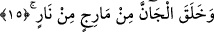
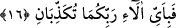

iftihar eden kimseye benzetilmiştir. O da içi boş, çamurdan mamul ateşte pişirilmiş
çanak gibi öter.
Allah Âdem (a.s.)’ı, önce balçık hâline getirdiği toprak, sonra şekillenmiş kara
balçık, sonra da pişmemiş çamura benzeyen bir balçıktan yarattı. Sonra da üzerine
üzüntü suyunu döktü. Bu sebeple insan oğlunun üzüntüsüz olduğu görülmez. Âdem
(a.s.)’ın yaratılması konusunda bu devrelerin birini bir âyet-i kerîme anlatır, başka âyet
de öbür devreyi anlatır. Bu bakımdan aralarında bir çelişki yoktur.
15. Cinleri öz ateşten yarattı.
Allah “cânnı”; yâni cinni, yahut cinnin babasını yarattı. Dahhâk’ın dediği gibi iblisi
yarattı. el-Keşf ’ adlı eserde el-cân, “cinnin babasıdır,” denmiştir. İnsan ins’in babasıdır,
iblis de şeytanın babasıdır.
Mâric, “dumandan arınmış saf ateş” demektir. Mücâhid demiştir ki; el-Mâric, ateşin
üzerine yükselen birbirine karışmış kırmızı, sarı ve yeşil alevdir. Bu durumda mânâ,
“cinleri saf ve renkleri birbirine karışmış alevden yarattı” tarzında olur. Aslında mâric
“karşılıklı çalkantı” demektir.
Keşfü’l-esrar’da denilmiştir ki; cinler öz ateşten, melekler ateşin nurundan, şeytanlar
da ateşin dumanından yaratılmıştır. Bazı müfessirler demişlerdir ki, cinler ince perde
ile gökyüzü arasında bulunan ateşten yaratılmıştır. Bu yıldırımın da bulunduğu bölgedir.
Gökyüzü bu ince perde ardından görünür.
Fütûhât’ın ikinci sifirinin dokuzuncu bâbında zikredilmiştir ki, “mâric” hava ile
imtizaç etmiş ateştir ki kendisine alevlenmiş hava (hava-yı müşta‘il) derler. “Cân” ateş
ve hava olmak üzere iki unsurdan oluşan mahlûktur. Âdem de su ve toprak olmak üzere
iki unsurdan yaratılmıştır. Su ile toprak karıştırılırsa buna “tîn/çamur” denir. Hava ile
ateş karıştırıldığında buna “mâric” derler. Beşerde insan neslinin devamı ana rahmine
erlik suyu bırakmaktır. Cin neslinin devamı ise dişisinin rahmine hava ilkâ etmektir.
Cinlerle Âdem’in yaratılışı arasında altmış bin sene vardır.
16. O halde, Rabbinizin nimetlerinden hangisini yalanlayabilirsiniz?
Size yaratılışınızda kat kat sayısız nimetler akıttı ki, sizi yaratılanların en üstünü ve
kâinâtın özü kıldı.
Bu âyet-i kerîme’de şuna işâret vardır; Allah, insan görünümündeki rûhun hakikatine
balçık perdesi arkasından cemal ve lütfu ile tecellî etti. Nefsin iblisinin hakikatine de